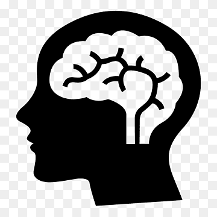

O que é nosso projeto?
O Projeto Mentes Conectadas nasceu com o propósito de abrir diálogo sobre um tema que afeta milhares de estudantes todos os dias: a saúde mental. Em meio à rotina escolar, às cobranças familiares, às expectativas sobre o futuro e aos desafios pessoais que cada aluno enfrenta, muitas vezes não há espaço para falar sobre emoções, fragilidades e medos – e é justamente esse espaço que queremos criar. Nosso objetivo é levar informação acessível e confiável para jovens que, assim como nós, aprendem diariamente a lidar c om sentimentos complexos. Acreditamos que falar sobre saúde mental não é sinal de fraqueza, mas sim de coragem. O projeto busca oferecer apoio, conscientização e acolhimento, mostrando que pedir ajuda é um ato de força e que ninguém precisa passar por momentos difíceis sozinho. Através de textos informativos, vídeos selecionados e um podcast produzido pela equipe, buscamos promover reflexões, despertar empatia e construir uma rede onde todos se sintam vistos, ouvidos e respeitados. O Mentes Conectadas é mais do que um trabalho escolar: é um convite para cuidar de si e do outro.
Nossa equipe
O que vamos realizar no projeto?
Ao longo do desenvolvimento do Projeto Mentes Conectadas, vivenciamos uma experiência transformadora que uniu pesquisa, diálogo e produção de conteúdo voltado para a saúde mental dos estudantes da nossa instituição. Desde o início, nosso objetivo era compreender de maneira mais profunda a realidade emocional dos jovens, identificar suas principais dificuldades e criar materiais que realmente fizessem sentido para a comunidade escolar. O primeiro passo foi realizar uma série de pesquisas sobre saúde mental, buscando entender como temas como ansiedade, depressão, pressão familiar, pressão escolar, amor e saudade afetam o cotidiano dos estudantes. Mergulhamos em artigos, livros, documentários e relatos, ampliando nossa visão sobre a importância do cuidado psicológico na adolescência. Esse processo nos permitiu construir um conhecimento sólido, fundamentado e sensível, que serviu de base para todo o trabalho que desenvolvemos. Além disso, realizamos um levantamento dentro da própria escola, onde coletamos respostas e opiniões dos alunos sobre suas vivências emocionais. Através de formulários, conversas e questionários anônimos, tivemos acesso a relatos sinceros que mostraram o quanto muitos estudantes enfrentam desafios silenciosos, que nem sempre são percebidos no ambiente escolar. Essas informações foram essenciais para direcionar nossas ações e criar conteúdos que realmente dialogassem com as necessidades do nosso público. Um dos momentos mais especiais do projeto foi a produção do nosso podcast, que contou com a participação da psicóloga Isabella, profissional da nossa instituição. A conversa abordou temas fundamentais como o impacto das emoções no desempenho escolar, formas saudáveis de lidar com a pressão, sinais de alerta relacionados à saúde mental e caminhos possíveis para buscar ajuda. A presença da psicóloga trouxe profundidade e credibilidade ao projeto, além de proporcionar um espaço acolhedor para falar sobre assuntos que, muitas vezes, são evitados ou tratados com superficialidade. O processo de gravação do podcast nos permitiu vivenciar de perto a importância da comunicação e da escuta ativa. Percebemos que, quando falamos abertamente sobre sentimentos, dúvidas e vulnerabilidades, criamos um ambiente de confiança que pode transformar realidades e ajudar outras pessoas a compreender que não estão sozinhas. Reunindo todas essas etapas – as pesquisas teóricas, o contato direto com estudantes, a produção de materiais informativos e a entrevista com uma profissional da área – construímos um projeto que não é apenas acadêmico, mas também humano. O Mentes Conectadas se tornou um espaço de acolhimento, reflexão e apoio, reforçando a importância de olhar para si, para o outro e para a saúde mental com empatia e responsabilidade.
Como acessar nosso material de apoio?
Pode acessar o nosso material de apoio através das nossas outras páginas, onde disponibilizamos conteúdos complementares que aprofundam os temas abordados no projeto. Esses materiais incluem artigos informativos, vídeos educativos e recursos práticos para ajudar na gestão da saúde mental. Basta clicar no botão abaixo para ser redirecionado para a página de materiais de apoio e explorar todo o conteúdo que preparamos com cuidado e dedicação.
Como entrar em contato conosco?
Você pode entrar em contato conosco através do Instagram feito pela equipe do projeto. Basta clicar no ícone abaixo: